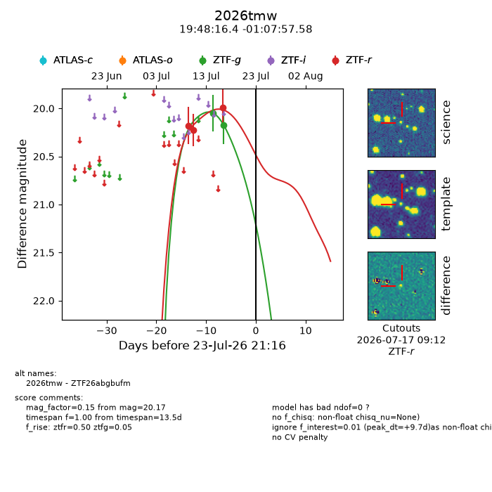
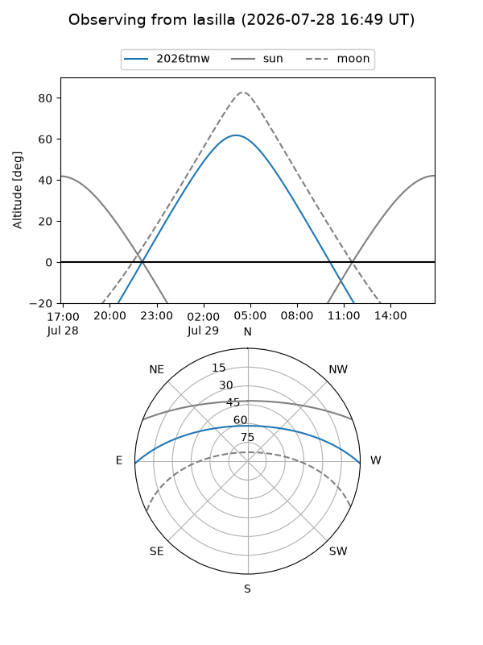
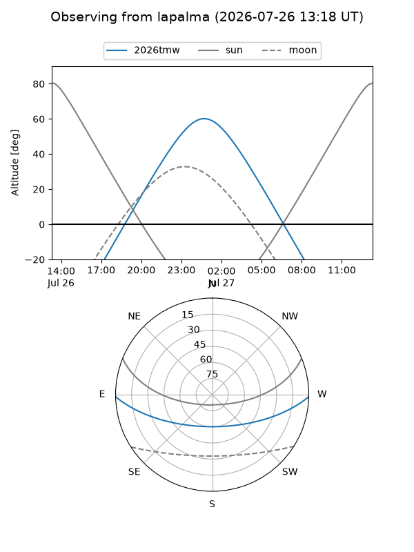
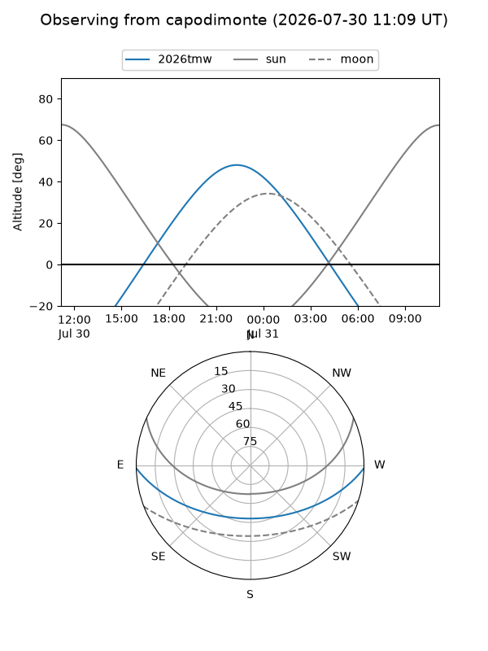
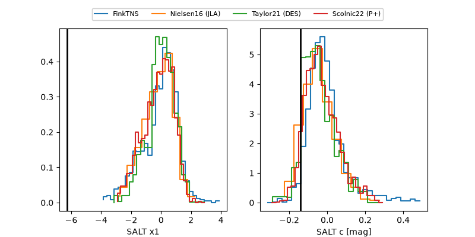

2026tmw
Target 2026tmw at 2026-07-23 21:19
Aliases and brokers:
FINK-ZTF: ztf.fink-portal.org/ZTF26abgbufm
Lasair-ZTF: lasair-ztf.lsst.ac.uk/objects/ZTF26abgbufm
ALeRCE-ZTF: alerce.online/object/ZTF26abgbufm
YSE-PZ: ziggy.ucolick.org/yse/transient_detail/2026tmw
TNS name: wis-tns.org/object/2026tmw
Direct TNS query: direct search
alt names
ZTF26abgbufm (ztf,fink_ztf)
2026tmw (tns,yse)
Coordinates:
equatorial (ra, dec) = 297.0684,-1.13266
equatorial (HMS+DMS) = 19:48:16.41,-01:07:57.58
galactic (l, b) = (38.4896,-13.14554)
Flags:
TNS type: nan
peak dt: +9.7
Photometry:
last ztfg=20.17, ztfr=19.99
2 ztfg, 3 ztfr detections
Lightcurve

Visibility



Additional plots
